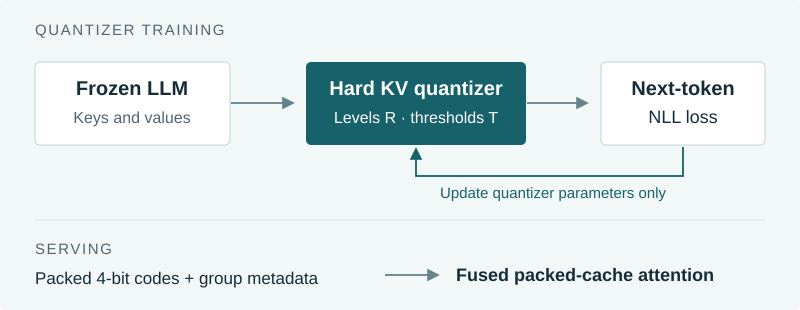

EMNLP 2026 Main conference · Accepted
BeyondBetter-than-Full-Precision KV Caches via Learnable Non-Uniform Quantization as Implicit Regularization
University of Central Florida
What if a smaller KV cache could also improve model quality? Beyond learns the cache quantizer from next-token prediction loss, while keeping the language model frozen.
KV storage compression
5.0 effective bits per scalar, including metadata, versus a 16-bit cache.
Peak decode-kernel speedup
Versus FlashAttention-4 on one NVIDIA B300, across the tested configurations.
Peak serving throughput gain
Complete vLLM paths on one B300, at batch 1536 with cold 1024+128-token requests.
01 / Method
Learn the quantizer.
Keep the model frozen.
Most KV quantizers optimize a local reconstruction objective. Beyond instead learns the representation levels R and decision thresholds T from next-token negative log-likelihood. The forward pass uses the same hard quantizer during training and inference.

Loss-aware learning
Straight-through and boundary-localized pseudo-gradients update the quantizer parameters, with no backbone-weight updates.
Packed-cache serving
A fused CuTe decode kernel reads packed 4-bit codes and reconstructs K/V in registers. vLLM retains scheduling and paged cache management.
Method: Sections 3.2–3.3. Storage accounting: Appendix F. The default configuration uses 4-bit codes and groups of 32.
02 / Results
Quality and efficiency,
measured separately.
The paper evaluates three instruction-tuned models, spanning dense and MoE backbones. Beyond improves held-out Pile perplexity relative to Native and obtains the highest LongBench Avg21 among the four main compared methods for each model.
| Model | Pile PPL reduction vs. Native | LongBench Avg21 ↑ | Avg21 gain vs. Native |
|---|---|---|---|
| Llama-3.1-8B-Instruct | 2.2% | 44.9 | +1.5 points |
| Ministral-3-14B-Instruct-2512-BF16 | 2.8% | 47.4 | +2.0 points |
| Qwen3-30B-A3B-Instruct-2507 | 7.0% | 50.2 | +1.7 points |
Main comparisons: Native, KV-FP8, TurboQuant-KV4, and Beyond. These methods use different effective cache budgets; Appendix E.4 adds roughly matched-bit controls. Scores above follow the rounded values reported in Section 4.2.
What the speedups measure
Kernel: batches 1 and 16 over 1K–128K contexts, after 50 warmups and 500 CUDA-graph replays. Serving: the official vLLM offline driver, 1024-token prompts, 128 generated tokens, an 8192-token scheduling budget, the same BF16 backbone, and prefix caching disabled. The two speedups refer to different measurements.
See deployment results in Figure 7Gains vary by task and model. Improvements over the unmodified model do not imply a uniform capability gain; the paper reports task regressions and additional adaptation controls.